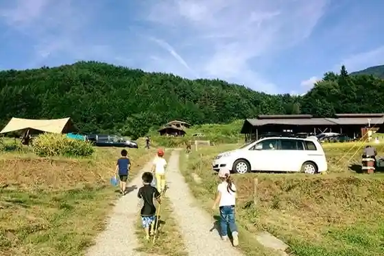
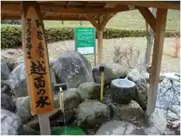

Sennin Tsuka Park
Iijima, Nagano · 0265-86-6764 · Official / source link
Kyanpu Farm Inaka no Kaze
Iijima, Nagano · 0265-86-6655 · Official / source link

Yoda Setsu Park
Iijima, Nagano · 090-4750-1398 · Official / source link
Ji Fuku In Shidare Sakura
Iijima, Nagano · 0265-86-3111 · Official / source link
Kosumo no Mizu (Shinshu no Meisui Hi Mizu)
Iijima, Nagano · 0265-86-6046 · Official / source link

Iijima Folk History Museum Iijima Camp Office
Iijima, Nagano · 0265-86-4212 · Official / source link
Agurinecha Iijima
Iijima, Nagano · 0265-86-6072 · Official / source link
Roadside Station Hana no Sato Iijima
Iijima, Nagano · 0265-86-6580 · Official / source link
Furusato no Aji Iijima
Iijima, Nagano · 0265-86-6415 · Official / source link
Roadside Station Tagiri Village
Iijima, Nagano · 0265-98-5525 · Official / source link